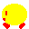
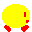
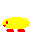
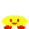
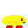
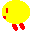
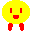
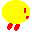

立つ
立つ
何もせず放っておく
走る
←→キー
加速をつけすぎると滑って止まりにくくなります
反動をつける
スペースキーを押す
スペースキーを押している時間が短ければ短いほど高く飛べます
ジャンプする(ぴょん)
スペースキーを放す
降下する(ふわり)
落ちる
この間は空中移動が可能です
すり抜ける(するり)
斜めにブロックにぶつかる
するりとブロックをすり抜けてしまいます
勢いをつけてジャンプするとするりになりやすいです
連続ジャンプ
着地のときにまたジャンプする
階段を登ったりするとき使います
しゃがむ
↓キー
歩く(ずるずる)
しゃがんで←→キー
ゆっくり歩くことができます
クリア
全バナナを食べる
次のステージに進むかゲームクリアです
死亡
トゲ・自爆
残りがあれば同じステージからやり直せます
※古い資料です。現在は一部当てはまらない部分があります。